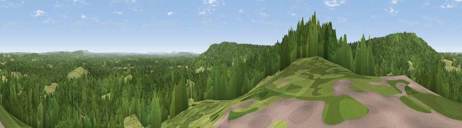

Viewpoint near Haslemere
#19249 in England · top 22% of its area beats it · near HaslemereThe view, rendered

A 360° render of this exact spot computed from the terrain model, tree cover and land cover — summer colours, afternoon light, calibrated against photographs of famous viewpoints. Real trees, hedges and buildings will differ in detail.
The panorama
Grey silhouette: terrain skyline in each direction (720 bearings, Earth curvature and refraction included). Dashed green: skyline with trees (+15 m) and buildings (+8 m) as obstacles. Blue strip: how far the ground is visible on each bearing.
Where the view opens
Wedge length = distance to the farthest visible ground on that bearing (vegetation-aware). Rings at 10, 25 and 50 km.
What fills the view
67% woodland · 29% grassland · 2% built-up · 2% cropland
Angular shares of the visible panorama (visual magnitude), not map area. Landscape diversity 0.34 (0–1 Shannon).
Key numbers
More beautiful places nearby
The staircase of upgrades: each row has a higher view potential than everything closer. Driving times are estimates from straight-line distance, calibrated against real road routing — check an actual route before setting out.
| Place | Direction | Drive | Score |
|---|---|---|---|
| Temple of the Four Winds | NNW · 2 km | ~5 min | 66.6 |
| Viewpoint near Haslemere | SSE · 3 km | ~8 min | 68.9 |
| Viewpoint near Fernhurst | S · 5 km | ~11 min | 75.1 |
| Viewpoint near Cocking | S · 18 km | ~31 min | 78.3 |
| Linch Down | SSW · 18 km | ~31 min | 85.2 |
| Beacon Hill | SW · 19 km | ~33 min | 85.8 |
| Chanctonbury Ring | SE · 31 km | ~49 min | 87.0 |
| Firle Beacon | ESE · 63 km | ~86 min | 88.9 |
51.09956, -0.69211 · source: screening · position refined by local search. Computed location — check access rights before visiting.